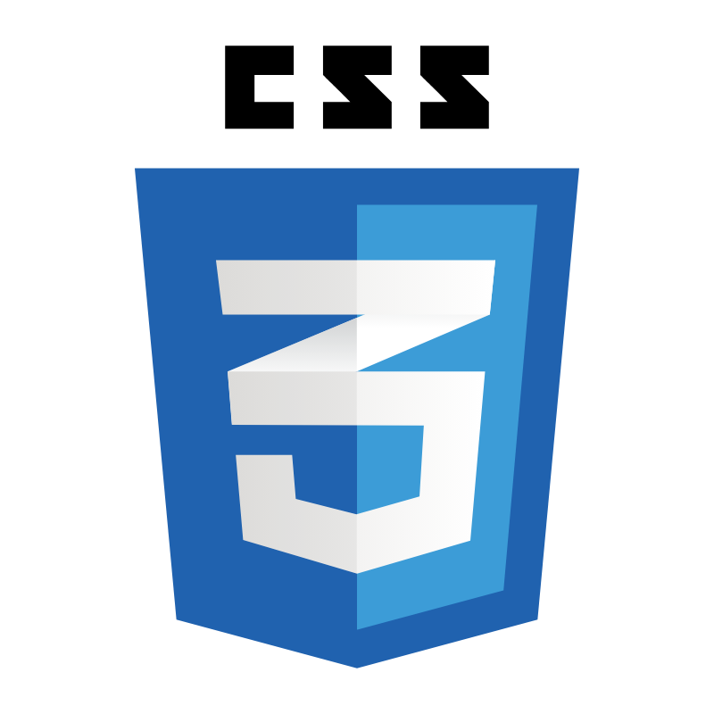
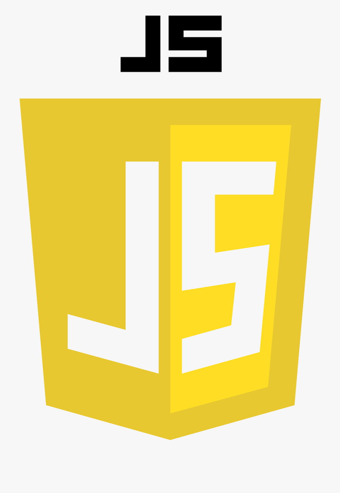

Conoce las tecnologías utilizadas


HTML5 fue utilizado para crear la estructura de la página web, organizando el contenido mediante títulos, párrafos, imágenes, enlaces, formularios y secciones.

CSS fue utilizado para poder diseñar y personalizarla apariencia de la pagina web. permitio modificar los colores, tamaños, menu de navegación y los elementos visuales.

Se utilizo para agregar interactividad a la página web, permitiendorealizar acciones dinamicas para mejorar la experiencia del usuario mediante funciones que responden a eventos dentro del sitio.
Fue la herramienta que se utilizo para desarrollar la pagina web, nos permitio escribir, organizar y modificar los codigos de los lenguajes utilizados